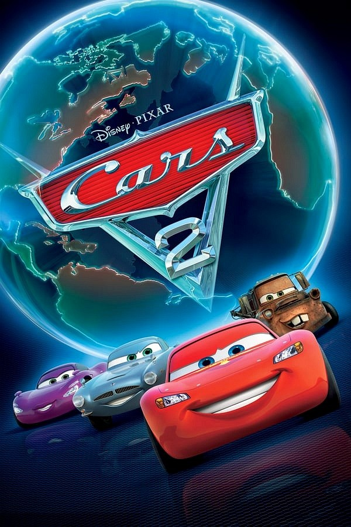
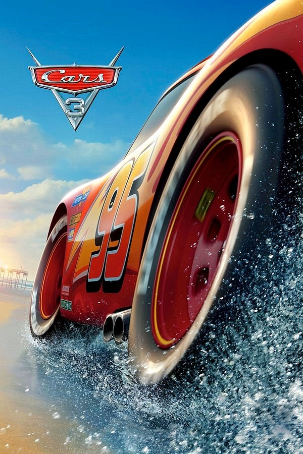

Cars / Carros
Ao viajar para a Califórnia, o famoso carro de corridas Relâmpago McQueen se perde e vai parar em Radiator Springs, uma cidadezinha na Rota 66. Ele conhece novos amigos e aprende lições que mudam sua forma de encarar a vida.
Produtoras: Pixar animations Studios e Walt Disney Pictures
Diretor: isso é um teste ok?
Roteiristas: Kiel Murray, John Lasseter, Dan Fogelman
Trailer

Cars 2 / Carros 2
O astro das corridas, Relâmpago McQueen, e o carro-guincho, Mate, viajam para disputar o primeiro Grand Prix Mundial, que irá revelar o carro mais veloz do planeta. Nessa jornada imperdível, Mate se envolve com um grupo de espionagem e vive grandes aventuras com seus amigos.
Produtoras e Editoras: Walt Disney Pictures e Pixar Animation Studios
Diretor: John Lasseter
Roteiristas: Ben Queen, Lasseter, Lewis e Dan Fogelman
Trailer

Cars 3 / Carros 3
Durante mais uma disputa eletrizante nas pistas, o campeão Relâmpago McQueen acelerou demais e acabou perdendo o controle. Agora, após ter capotando várias vezes e quase ter partido dessa para melhor, o vermelinho vai ter sua vida alterada para sempre. O acidente foi tão grave que, com os estragos, McQueen pode ter que se aposentar de vez.
Produtoras: Walt Disney Pictures e Pixar Animation Studios.
Editoras: Walt Disney Studios Motion Pictures.
Diretor : Brian Fee.
Roteiristas: Bob Peterson, Eyal Podell, Kiel Murray, Ben Queen, Mike Rich